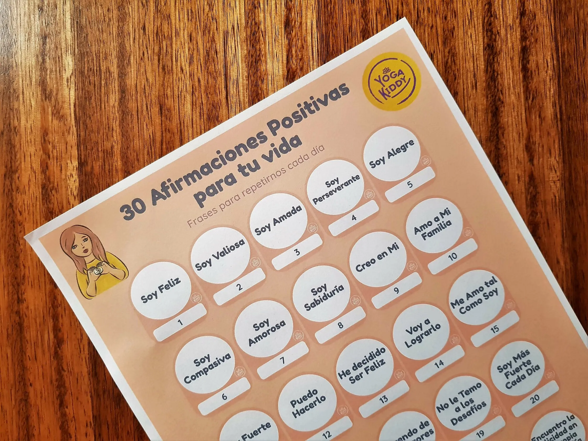

¡Hola! Primero que todo espero que te encuentres bien 🙏.
Ya hemos comenzado Julio y así, se nos ha pasado la mitad de este difícil año 2020.
Los que ya nos conocen y nos siguen hace tiempo, seguramente ya han podido ver y descargar 3 calendarios que he creado para que puedan disfrutar y compartir con sus niños y niñas momentos únicos. De todos modos, aquí te comparto los enlaces directos por si no los viste, pues ¡aún puedes descargarlos!
1) 30 días de yoga con tus niños
2) 30 días de meditación con tus niños
3) 30 frases positivas para decirle a tus niños
Y aquí estoy hoy día, nuevamente para compartirles una nueva actividad que preparé (con mucho cariño ❤️), para ustedes madres, hijas, nietas, abuelas, sobrinas, compañeras... mujeres!
Porque tal vez todo esto ha sido un gran desafío, o tal vez ha sido una oportunidad, otras mujeres han tenido que reinventarse... pero lo que si, todas hemos tenido que enfrentarnos a una montaña rusa de sentimientos y emociones.
Este regalito 🎁 se trata de "30 Afirmaciones Positivas Para Tu Vida", donde la idea es que cada día podamos regalarnos una frase positiva que nos ayuden a llenar nuestro corazón, nos ofrezca un aliento amoroso y podamos regalarnos una linda sonrisa. ¡Lo necesitamos y lo merecemos!
¿Cuándo utilizar estas frases? ¡Cuando quieras, lo sientas o lo necesites! Aquí ya tienes 30 para todo un mes 😉
Si conoces a alguien que pueda interesarle, siéntete libre de compartir el enlace de nuestro sitio web para que puedan descargarlo.
Un abrazo apretado,
Carmen ✨